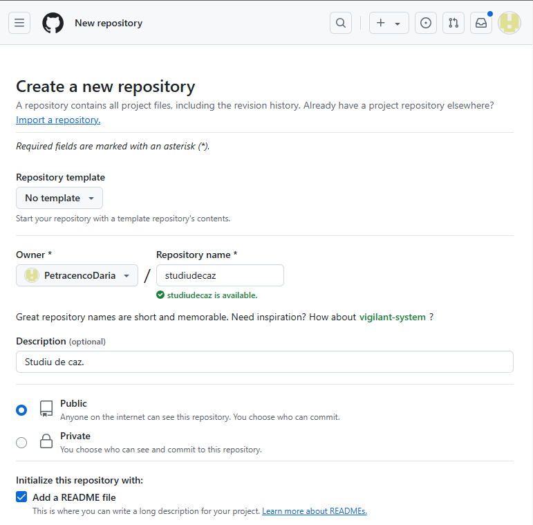

Studiu de Caz: Utilizarea Aplicațiilor de Lucru în Echipe
Pașii unui Plan de Colaborare Eficient folosind GIT/GIT HUB
Într-un proiect software de echipă, utilizarea corectă a GIT și GIT HUB este esențială pentru a asigura o colaborare eficientă, transparență și gestionarea modificărilor. Mai jos sunt pașii esențiali pentru implementarea acestui proces.
- Pasul 1: Crearea unui repozitoriu Git - Începe prin crearea unui repozitoriu pe GitHub pentru proiectul
tău. Acesta va fi locul central unde toate fișierele și modificările vor fi stocate.

- Pasul 2: Adaugarea fisierelor - După crearea repozitoriului, adauga fisierele din proiectul in sectiunea "Drag files here to add them to your repository".

- Pasul 3: Adaugarea colaboratorilor - Pentru a lucra la un proiect impreuna cu o persoana sau mai multe trebuie sa adaugam colaboratori.

- Pasul 4: Crearea unei ramuri pentru dezvoltare - Fiecare dezvoltator trebuie să creeze o ramură
proprie pentru a lucra la o funcționalitate specifică. Acest lucru ajută la evitarea conflictelor în
codul principal.

- Pasul 5: Modificarea fisierilor pe GitHub - Fiecare membru al echipei efectuează modificările
necesare pe ramura sa, fără a afecta proiectul principal. Testarea modificărilor este esențială înainte
de a le împinge în repozitoriul principal.
Primul colaborator a facut modificarile in "index.html":
- Pasul 5: Modificarea fisierilor pe GitHub.
Al doilea colaborator a facut modificarile in "style.css":
- Pasul 6: Trimiterea modificărilor pe GitHub - După ce modificările sunt testate și gata, acestea
sunt împinse (push) în depozitul GitHub, astfel încât să fie disponibile tuturor colaboratorilor.
Modificari trimise al colaboratorului 1:
- Pasul 6: Trimiterea modificărilor pe GitHub - După ce modificările sunt testate și gata, acestea
sunt împinse (push) în depozitul GitHub, astfel încât să fie disponibile tuturor colaboratorilor.
Modificari trimise al colaboratorului 2:
- Pasul 7: Crearea unui Pull Request - După ce modificările au fost împinse, se va crea un "pull
request" pentru ca ceilalți membri ai echipei să poată revizui și aproba modificările.

- Pasul 7: Integrarea modificărilor - După revizuire, modificările sunt integrate în ramura
principală a proiectului. Acest pas asigură că codul principal este mereu actualizat cu cele mai recente
funcționalități.

- Pasul 8: Testarea finală și implementarea - După integrarea modificărilor, se efectuează o
testare finală pentru a asigura că întregul sistem funcționează corect. Dacă totul este în ordine,
proiectul poate fi implementat.

Fiecare dintre acești pași ajută la menținerea unei colaborări fluente și la gestionarea eficientă a versiunilor într-un proiect software. Utilizarea corectă a GIT și GitHub nu doar că ajută echipa să lucreze mai rapid, dar și îmbunătățește calitatea finală a codului.